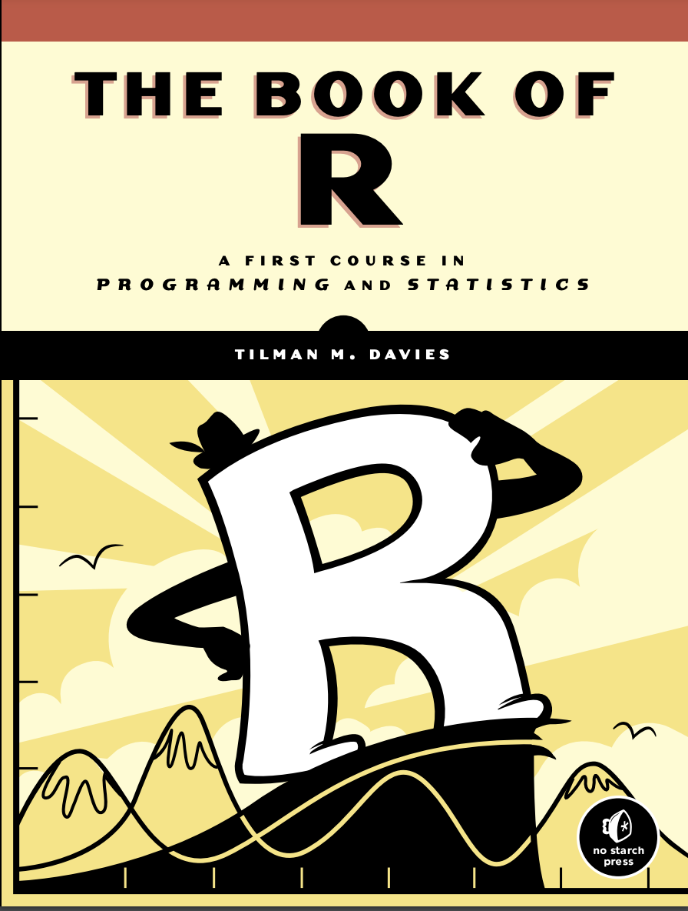
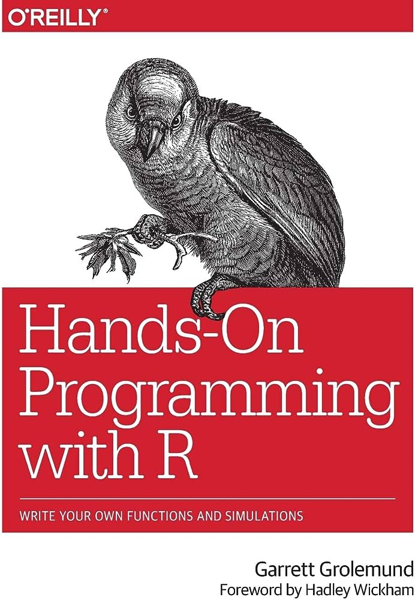
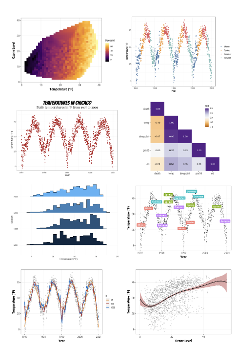
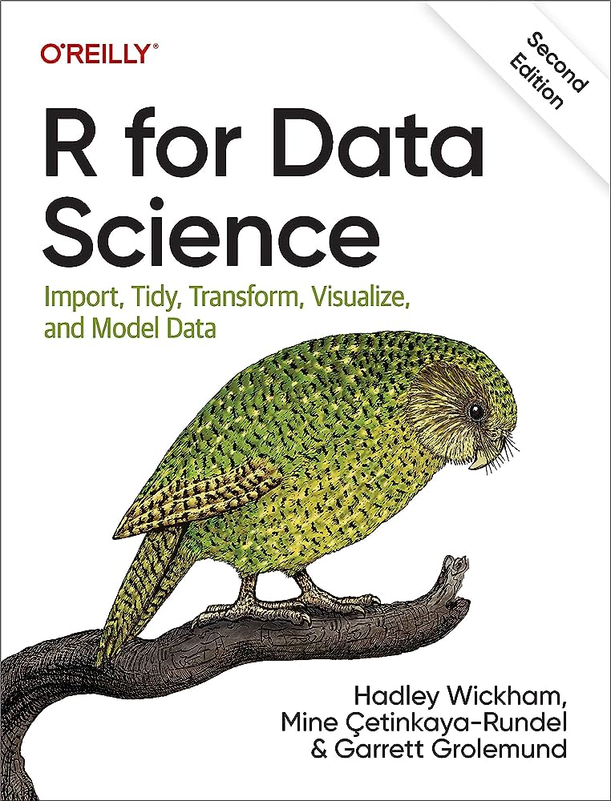
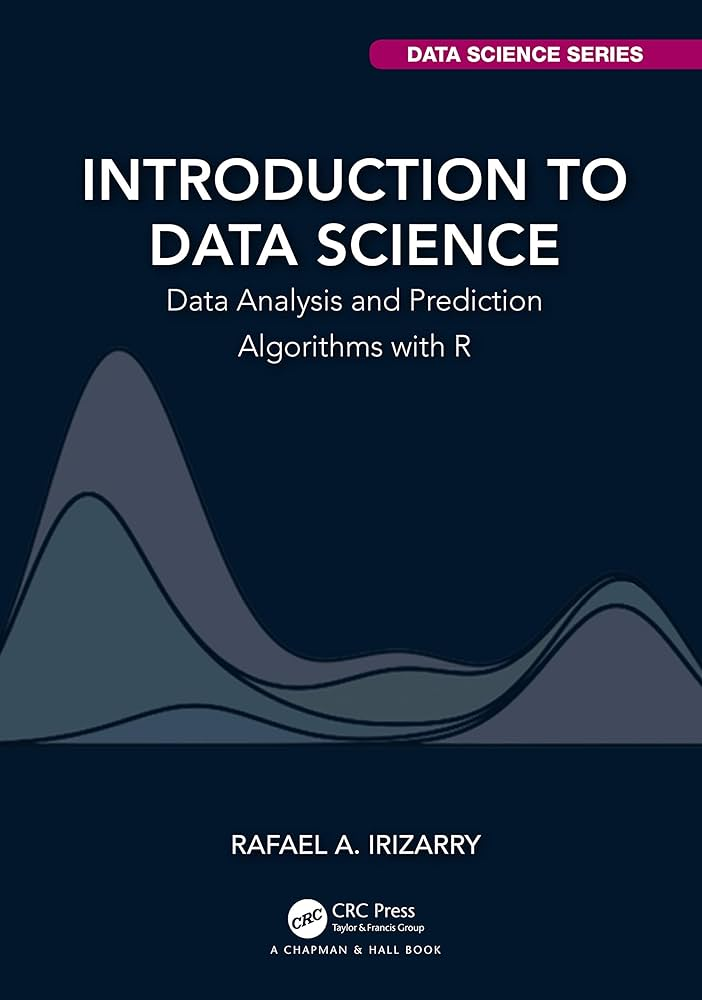
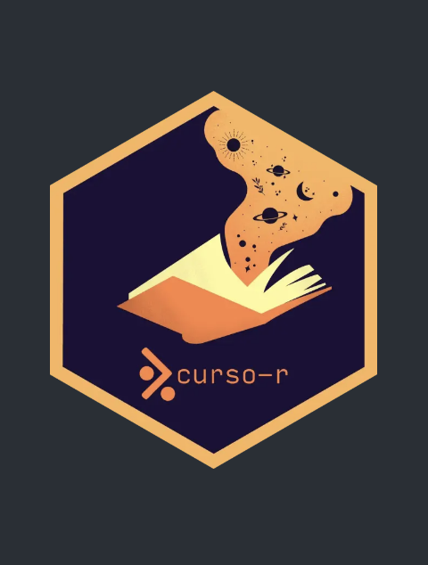
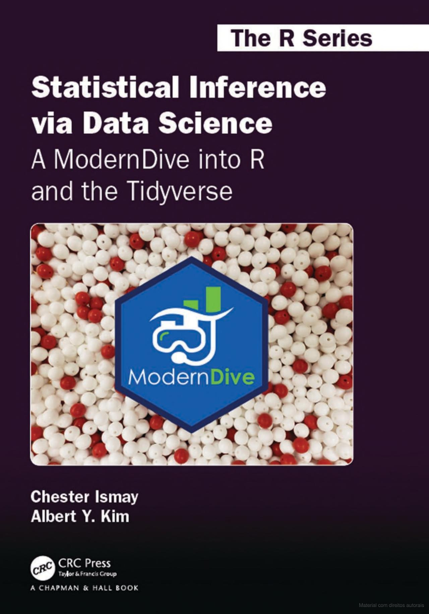
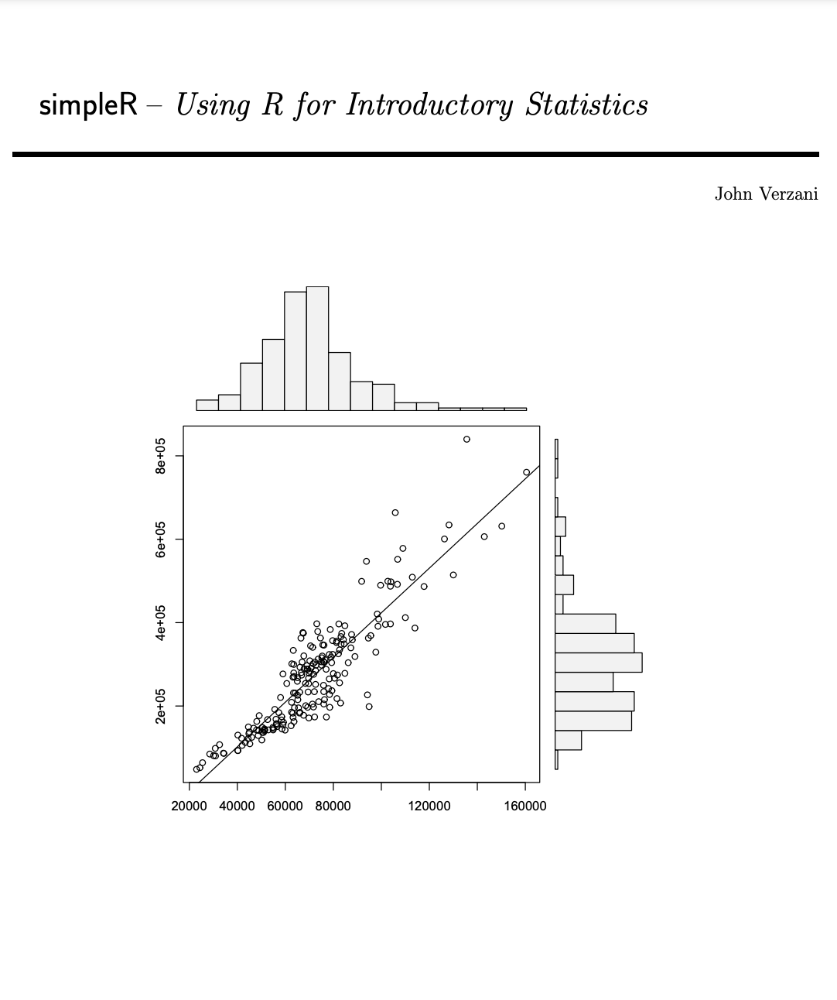
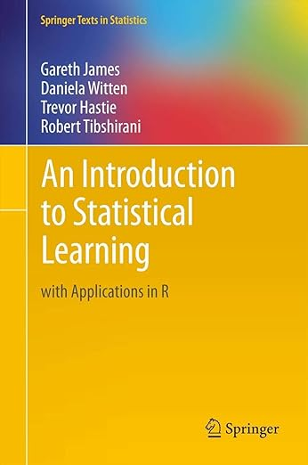
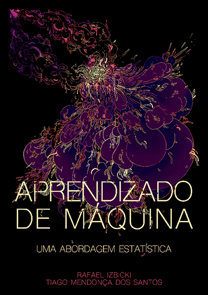

programação em r
há alguns anos eu tenho utilizado o r em minhas aulas, principalmente em disciplinas básicas de estatísticas. desde então, tenho percebido que as aulas ficaram melhores e que os alunos passaram a se interessar mais pelo universo da estatística e probabilidade.
o r é uma linguagem de programação muito legal. é possível, a partir dele, gerar gráficos bonitos, manipular vetores de forma elegante e fácil, realizar análises estatísticas, simular experimentos aleatórios e utilizar vários modelos de aprendizado de máquina que estão disponíveis em diversos pacotes.

the book of r
foi um dos livros que utilizei quando comecei a aprender r. é um guia bem abrangente e amigável para iniciantes. começa com os fundamentos da linguagem (r como calculadora, criação de objetos, tipos de objetos, vetores, matrizes, data frames, gráficos), depois aprofunda na parte da programação ao falar sobre funções, estruturas condicionais e estruturas de repetição. ainda contém capítulos sobre probabilidade e inferência estatística.

hands-on programming with r
o livro, introdução amigável à linguagem r, se concentra no ensino das habilidades de programação mais relacionadas à ciência de dados. uma coisa que me faz gostar bastante deste livro é que o ensino da linguagem (fundamentos, importação e manipulação de dados, escrita de funções, loops) a partir de três projetos práticos: lançamento de dados, jogo de cartas e criação de uma máquina caça-níqueis.

introdução à linguagem r
o livro escrito por pedro duarte faria tem como objetivo, ensinar os fundamentos da linguagem r e como eles se aplicam na prática de análises de dados. alguns temas incluem: estruturas e tipos de dados; importação de dados e operações sobre tabelas; dados relacionais e join’s; geração de gráficos; controles de fluxo e funções e loops.
canal no youtube da posit
o rstudio foi fundado em 2009 e, em 2011, lança o rstudio IDE. em julho de 2022, o rstudio mudou seu nome para posit, sinalizando sua ampliação na exploração de outras linguagens de programação, como python. o rstudio IDE manteve seu nome. o canal no youtube da posit possui um rico material sobre muitos tópicos, como estas excelentes aulas sobre o tidyverse) e sobre como criar um portfolio de data science com quarto.
visualização de dados no r
o ggplot2 é um pacote do R para a produção de gráficos. ele é uma implementação da gramática dos gráficos (grammar of graphics). a gramática dos gráficos é um conjunto de regras e convenções que descreve como os componentes de um gráfico podem ser combinados para criar visualizações. quando você entende esta estrutura da grmáticas dos gráficos, as coisas ficam mais fáceis e é possível produzir gráficos muito bonitos. sou super fã deste pacote e sempre tento introduzir seus fundamentos em minhas aulas. a seguir, duas recomendações que podem ser úteis para quem quer aprender a construir gráficos no r com o ggplot2.

ggplot2: elegant graphics for data analysis
livro escrito por hadley wickham, o criador do pacote ggplot2. gosto muito deste livro. não é um texto que apresentará receitas prontas de como construir gráficos no r. o foco da obra está em explicar a gramática dos gráficos que o pacote ggplot2 utiliza.

a ggplot2 tutorial for beautiful plotting in r
este tutorial foi escrito por cédric scherer. cédric começou a utilizar o ggplot2 enquanto preparava a apresentação de sua tese de doutorado em 2016. seu tutorial é um ótimo ponto de partida para quem quer aprender a usar a o ggplot2. a proposta do autor é introduzir o ggplot2 a partir de um estudo sobre morbidade e mortalidade por poluição do ar. sempre volto ao tutorial em momentos de dúvidas durante a construção de algum gráfico.
ciência de dados
ciência de dados é a disciplina que utiliza a estatística, a matemática e a ciência da computação para extrair informação e conhecimento a partir de conjuntos de dados. a lista desta seção apresenta o meu livro preferido para introduzir o assunto em sala de aula (r for data science) e também alguns outros bins títulos que já utilizei durante meu processo de aprendizagem.

r for data science
o livro cobre os tópicos de visualização, organização, transformação e importação de dados. os últimos capítulos abordam os aspectos técnicos para comunicação dos resultados obtidos durante o processo de ciência de dados. é nesta parte que o leitor pode aprender sobre o quarto, um sistema muito legal de publicação científica de código aberto (dá para criar relatórios, apresentações, livros, blogs e websites com ele). estou muito empolgado com o quarto e tenho gostado muito de utilizá-lo em meu dia a dia. o livro é excelente e possui muitos exercícios para praticar.

introduction to data science
o livro começa introduzindo os fundamentos de r para em seguida falar sobre manipulação de dados com dplyr, visualização de dados com ggplot2, organização de arquivos com o shell do unix/linux, controle de versão com git e github, e preparação de documentos reproduzíveis com quarto e knitr. também apresenta muitos exercícios e bons exemplos. há um segundo volume chamado advanced data science. este volume mais avançado concentra-se na aplicação de métodos estatísticos e de aprendizado de máquina na análise de dados.

ciência de dados em r
excelente material desenvolvido pelo pessoal da curso-r. o livro tem como objetivo apresentar ao leitor todas as etapas de uma análise de dados utilizando o r como ferramenta. neste livro, você encontrará ferramentas para importar, arrumar, manipular, visualizar e modelar bases de dados. ele também apresenta ferramentas para comunicar e automatizar resultados.
estatística com r
os livros desta seção além de apresentarem os fundamentos da linguagem r, contém tópicos que geralmente são abordados em um primeiro curso de estatística básica, como análise descritiva de dados, probabilidade, inferência estatística e regressão linear.

statistical inference via data science
o livro, além de ensinar os fundamentos de r e a utilizar o conjunto de pacotes tidyverse para ciência de dados, apresenta tópicos sobre inferência estatística, como amostragem, intervalos de confiança e testes de hipóteses. o capítulo final do livro, conte uma história com os dados, apresenta alguns estudos de caso adicionais sobre o trabalho com dados (exemplos: um estudo de caso sobre preços de casas vendidas num certo período e um estudo de caso sobre o teste de bechdel, uma medida da representação de mulheres em filmes e outras obras de ficção).

using r for introductory statistics
o livro aborda os fundamentos do r, manipulação e análise de dados, simulações de experimentos aleatórios e considerações sobre o teorema central do limite, intervalos de confiança e testes de hipóteses, análise de regressão e análise de variância. o objetivo do livro não é mostrar todas as características do r ou substituir um livro didático padrão, mas mostrar como o r pode ser utilizado para ilustrar e auxiliar na resolução de problemas estatísticos. há uma versão expandida deste livro que pode ser encontrada em nossa biblioteca.
aprendizado de máquina
nesta seção dois excelentes livros sobre aprendizado de máquina. ambos os livros conseguem conciliar a teoria e a prática apresentando aplicações interessantes para vários modelos de classificação e de aprendizado não supervisionado. os dois livros foram disponibilizados gratuitamente por seus autores.

an introduction to statistical learning with applications in r
livro espetacular que apresenta algumas das técnicas de modelagem e previsão mais importantes; utiliza aplicações do mundo real para ilustrar os métodos discutidos no texto. os tópicos incluem regressão linear, classificação, métodos de reamostragem, métodos baseados em árvores, máquinas de vetor de suporte, agrupamento e muito mais. há vários laboratórios para implementar e praticar no r as análises e os métodos discutidos em cada capítulo. se tornou uma espécie de livro de cabeceira para mim; um livro de referência para assuntos relacionados à aprendizagem de máquina. recentemente, um versão do livro com aplicações em python foi lançada.

aprendizado de máquina: uma abordagem estatística
outro excelente livro sobre aprendizado de máquina. escrito por rafael izbicki e tiago mendança dos santos, o objetivo desta obra é introduzir as ideias do aprendizado de máquina sob uma ótica estatística. a discussão é feita em linguagem r e os códigos produzidos ao longo do texto podem ser utilizados para aplicar os métodos apresentados. alguns resultados teóricos sobre os problemas e métodos investigados foram incluídos o que contribui muito para que o leitor consiga compreender as ideias e conceitos que estão por trás dos modelos investigados. o livro está dividido em três partes: regressão, classificação e aprendizado não supervisionado.